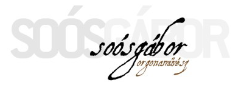

<!DOCTYPE html>
<html lang="hu">
<head>
    <meta charset="UTF-8" />
    <meta http-equiv="X-UA-Compatible" content="IE=edge" />
    <meta name="viewport" content="width=device-width, initial-scale=1.0" />
    <title>Soós Gábor orgonaművész</title>
    <link rel="icon" type="image/x-icon" href="favicon.ico" />
    <meta name="keywords" content="Soós, Gábor, orgonaművész" />
    <meta
      name="description"
      content="Információk rólam, valamint közelgő hangversenyeimről"
    />
    
    <link
      href="https://cdn.jsdelivr.net/npm/bootstrap@5.3.0-alpha1/dist/css/bootstrap.min.css"
      rel="stylesheet"
      integrity="sha384-GLhlTQ8iRABdZLl6O3oVMWSktQOp6b7In1Zl3/Jr59b6EGGoI1aFkw7cmDA6j6gD"
      crossorigin="anonymous"
    />
    <link
      rel="stylesheet"
      href="https://cdn.jsdelivr.net/npm/bootstrap-icons@1.10.3/font/bootstrap-icons.css"/>
    
    <link rel="stylesheet" href="style/style.css" />
    <script
      src="https://cdn.jsdelivr.net/npm/bootstrap@5.3.0-alpha1/dist/js/bootstrap.bundle.min.js"
      integrity="sha384-w76AqPfDkMBDXo30jS1Sgez6pr3x5MlQ1ZAGC+nuZB+EYdgRZgiwxhTBTkF7CXvN"
      crossorigin="anonymous"
    ></script>
    <script src="https://kit.fontawesome.com/ce71587b42.js" crossorigin="anonymous"></script>
    
</head>
<body>
    <footer class="footer-distributed rounded-3">
        <div class="footer-left">
          
  
          <p class="footer-links">
            <a href="index.php" class="link-1">Home</a>
  
            
  
            <a href="https://jegymester.hu/category/ZE*/zene" target="_blank"
              >Jegyvásárlás</a
            >
  
            <a href="#">Támogatók</a>
  
            <a href="kapcsolat.html">Kapcsolat</a>
          </p>
  
          <p class="footer-company-name">Soós Gábor © 2023 <br>
            <a class="link-info footer-company-about" href="http://localhost/vizsgamunka_masodik/admin/" target="_blank">admin</i> </a>
            
          </p>
          
        </div>
        
        <div class="footer-center">
          <div>
            <i class="fa-sharp fa-solid fa-location-dot"></i>
            <p><span>Batta András utca 13.</span>Győr</p>
          </div>
  
          <div>
            <i class="fa-sharp fa-solid fa-phone"></i>
            <p>+36707654321</p>
          </div>
  
          <div>
            <i class="fa fa-envelope"></i>
            <p><a href="mailto:info@soosgabor.hu">info@soosgabor.hu</a></p> <br>
            
          </div>
        </div>
  
        <div class="footer-right">
          
  
          <div class="footer-icons mb-4">
            <a href="https://www.facebook.com/soosgaben/" target="_blank"><i class="bi bi-facebook"></i></i></a>
            <a href="https://www.instagram.com/soosgaborg/" target="_blank"><i class="bi bi-instagram"></i></a>
            <a href="https://www.youtube.com/@GaborSoosOrg" target="_blank"><i class="bi bi-youtube"></i></a>
            
          </div>
          <p class="footer-company-about">
            <span>Partnerek</span>
            <a class="link-info" href="https://collegiummusicum.hu/" target="_blank" rel="noopener noreferrer">Collegium Musicum Jaurinense</a> <br>
            <a class="link-info" href="https://bjhf.hu/" target="_blank" rel="noopener noreferrer">BJHF</a> <br>
            <a class="link-info" href="https://gyor.egyhazmegye.hu/#/egyhazmegyenk/oldalak/OKTATASI?page=K%C3%81NTORK%C3%89PZ%C5%90" target="_blank" rel="noopener noreferrer">Győri Kántorképző</a>
          </p>
        </div>
      </footer>
</body>
</html>